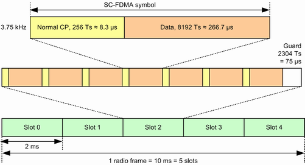
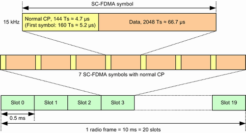

The channel bandwidth for NB-IoT is 200 kHz. At both edges, 10 kHz are not allocated (guard band). The remaining 180 kHz can be allocated to UEs.
- 3.75 kHz subcarrier spacing, bandwidth divided into 48 subcarriers
- 15 kHz subcarrier spacing, bandwidth divided into 12 subcarriers
In the time domain, the smallest unit is an SC-FDMA symbol. Each symbol contains a guard time called cyclic prefix (CP). A time slot contains seven SC-FDMA symbols with normal CP. A time slot for 3.75 kHz subcarrier spacing ends with a guard period (GP, no UL signal).
Depending on the subcarrier spacing, the slot length is 2 ms or 0.5 ms. A radio frame of 10 ms contains 5 slots or 20 slots.
Durations are often stated in sample intervals Ts. Ts can be calculated from the sampling frequency 30.72 MHz: 1 Ts = 1/30.72 MHz ≈ 32.55 ns.
The following table and figures summarize this information.
Subcarriers | Slots | Symbol duration | ||||
|---|---|---|---|---|---|---|
Spacing | No. | Duration | Per frame | CP | Data | Note |
3.75 kHz | 48 | 2 ms, 61440 Ts | 5 | 256 Ts | 8192 Ts | GP at end of slot 2304 Ts |
15 kHz | 12 | 0.5 ms, 15360 Ts | 20 | symbol 1: 160 Ts symbol n: 144 Ts | 2048 Ts | - |

